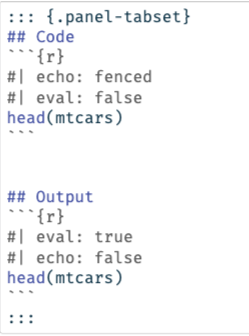

üóìÔ∏è Week 05
Improving Workflow for Reproducible Social Science
01 Dec 2025
Creating reports with Quarto
Intro to Quarto
Quarto provides a unified authoring framework for data science, combining your code, its results, and your prose
Quarto documents are fully reproducible and support dozens of output formats, like PDFs, Word files, presentations, and more
Quarto is a command line interface tool, not an R package
If you have any question how to use Quarto in the future, you should refer to the Quarto documentation.
Setup
- You need the Quarto command line interface (Quarto CLI), but you don’t need to explicitly install it or load it, as RStudio automatically does both when needed
Quarto CLI

Quarto visual editor
Quarto basics
You’ll see a Quarto file next slide – a plain text file that has the extension
.qmd:It contains three important types of content:
- An (optional) YAML header surrounded by —s
- Chunks of R code surrounded by ```
- Text mixed with simple text formatting like # heading and italics
.qmd example
.qmd with notebook interface
- To produce a complete report containing all text, code, and results, click “Render” or press
Cmd/Ctrl + Shift + K. You can also do this programmatically withquarto::quarto_render("docname.qmd") --to html/pdf

Diagram of Quarto workflow
When you render the document, Quarto sends the
.qmdfile toknitr, https://yihui.org/knitr/, which executes all of the code chunks and creates a new markdown (.md) document which includes the code and its outputThe markdown file generated by knitr is then processed by
pandoc, https://pandoc.org, which is responsible for creating the finished file

Pandoc fenced divs
Structure:
Start and end with equal number of : - minimum of 3 :::
Add curly brackets to indicate the start/end of class
{.class}or{sometimes-class}
Tabsets
- You can pplit up and flip between sections of a page, rather than having two columns for instance
Tabsets example
mpg cyl disp hp drat wt qsec vs am gear carb
Mazda RX4 21.0 6 160 110 3.90 2.620 16.46 0 1 4 4
Mazda RX4 Wag 21.0 6 160 110 3.90 2.875 17.02 0 1 4 4
Datsun 710 22.8 4 108 93 3.85 2.320 18.61 1 1 4 1
Hornet 4 Drive 21.4 6 258 110 3.08 3.215 19.44 1 0 3 1
Hornet Sportabout 18.7 8 360 175 3.15 3.440 17.02 0 0 3 2
Valiant 18.1 6 225 105 2.76 3.460 20.22 1 0 3 1
Footnotes
You can create inline footnotes like so:
some inline text with a^[footnote]If you hover your mouse over the citation and footnote in this sentence you’ll see a popup displaying the reference contents:
Coming back to source editor
## Text formatting
*italic* **bold** ~~strikeout~~ `code`
superscript^2^ subscript~2~
[underline]{.underline} [small caps]{.smallcaps}
## Headings
# 1st Level Header
## 2nd Level Header
### 3rd Level Header
## Lists
- Bulleted list item 1
- Item 2
- Item 2a
- Item 2b
1. Numbered list item 1
2. Item 2.
The numbers are incremented automatically in the output.
## Links and images
<http://example.com>
[linked phrase](http://example.com)
{fig-alt="Quarto logo and the word quarto spelled in small case letters"}
## Tables
| First Header | Second Header |
|--------------|---------------|
| Content Cell | Content Cell |
| Content Cell | Content Cell |Embedding code chunks
To run code inside a Quarto document, you need to insert a chunk. There are three ways to do so:
The keyboard shortcut Cmd + Option + I / Ctrl + Alt + I.
The “Insert” button icon in the editor toolbar.
By manually typing the chunk delimiters
{r} and.
Managing code chunks
Labeling them:
Customising chunk output:
eval: false prevents code from being evaluated. (And obviously if the code is not run, no results will be generated). This is useful for displaying example code, or for disabling a large block of code without commenting each lineinclude: false runs the code, but doesn’t show the code or results in the final document. Use this for setup code that you don’t want cluttering your reportecho: false prevents code, but not the results from appearing in the finished file. Use this when writing reports aimed at people who don’t want to see the underlying R code.message: false or warning: false prevents messages or warnings from appearing in the finished file.
Global options
- You can do this by adding the preferred options in the document YAML, under execute. For example, if you are preparing a report for an audience who does not need to see your code but only your results and narrative, you might set echo: false at the document level
Hide code:
Fold code:
Aesthetics (HTML appearence)
- Quarto comes pre-installed with 25 themes from Bootswatch and you can use them like so:
- Or you can customise a theme with CSS/SCSS/SASS
Pdf articles:
Figures
To embed an image from an external file, you can use the Insert menu in the Visual Editor in RStudio and select Figure / Image
If you include a code chunk that generates a figure (e.g., includes a
ggplot()call), the resulting figure will be automatically included in your Quarto document
Figure sizing
- There are five main options that control figure sizing:
fig-width, fig-height, fig-asp, out-width and out-height
Recommended options:
Plots tend to be more aesthetically pleasing if they have consistent width. To enforce this, set
fig-width: 6 (6”) andfig-asp: 0.618 (the golden ratio) in the defaults. Then in individual chunks, only adjustfig-aspControl the output size with
out-widthand set it to a percentage of the body width of the output document. We suggest toout-width: “70%” andfig-align: centerTo put multiple plots in a single row, set the
layout-ncolto 2 for two plots, 3 for three plots, etc. This effectively setsout-widthto “50%” for each of your plots iflayout-ncolis 2, “33%” iflayout-ncolis 3, etc.
Tables
- You can include two types of tables in a Quarto document: directly in your Quarto document (using the Insert Table menu) or they can be tables generated as a result of a code chunk
mpg cyl disp hp drat wt qsec vs am gear carb
Mazda RX4 21.0 6 160 110 3.90 2.620 16.46 0 1 4 4
Mazda RX4 Wag 21.0 6 160 110 3.90 2.875 17.02 0 1 4 4
Datsun 710 22.8 4 108 93 3.85 2.320 18.61 1 1 4 1
Hornet 4 Drive 21.4 6 258 110 3.08 3.215 19.44 1 0 3 1
Hornet Sportabout 18.7 8 360 175 3.15 3.440 17.02 0 0 3 2- If you prefer that data be displayed with additional formatting you can use the
knitr::kable()function
Bibliographies and Citations
- To add a citation using the visual editor, go to Insert > Citation. Citations can be inserted from a variety of sources:
I suggest particularly two ways:
DOI (Document Object Identifier) references
Your document bibliography (a .bib file in the directory of your document)
If you add a citation using the first method, the visual editor will automatically create a bibliography.bib file for you and add the reference to it
It will also add a bibliography field to the document YAML. As you add more references, this file will get populated with their citations
Creating presentations with Quarto
Presentations with format: revealjs
Quarto comes with 10 built-in themes:
beige, blood, dark, default, league, moon, night, serif, simple, sky, solarized
Absolute positioning
Absolute position allows for tight control of placement
output-location: column-fragment
#| output-location: column-fragment
Footer/Logo
Slide background
## Slide Background {background-color="black" background-image="images/howard-gentleman.jpeg" background-size="100px" background-repeat="repeat"}| Attribute | Deafult | Description |
|---|---|---|
| `background-image` | URL of the image to show. GIFs restart when the slide opens | |
| `background-size` | cover | See background-size on MDN |
| `background-position` | center | See background-position on MDN |
| background-repeat | no-repeat | See background-repeat on MDN |
| background-opacity | 1 | Opacity of the background image on a 0-1 scale. 0 is transparent and 1 is fully opaque |
Further materials
Reports:
Presentations:
Lab exercise
Create a new Quarto document using File > New File > Quarto Document. Read the instructions. Practice running the chunks individually
Practice what you’ve learned in the lecture by creating a very short report. The title should be your name, and you should include headings for each step in your report
Using any R in-built dataset, you will come up with one data wrangling task (e.g. filtering and summarising) to run its code inside your Quarto document (e.g. code chunk). Make sure that your report should include both code and output
Using the same R in-built dataset, you will come up with one data visualisation (e.g.
ggplot) to run its code inside your Quarto document (e.g. code chunk). Make sure that your report should include both code and outputFinally, render your Quarto report in both HTML and PDF format
SOCS0100 – Computational Social Science